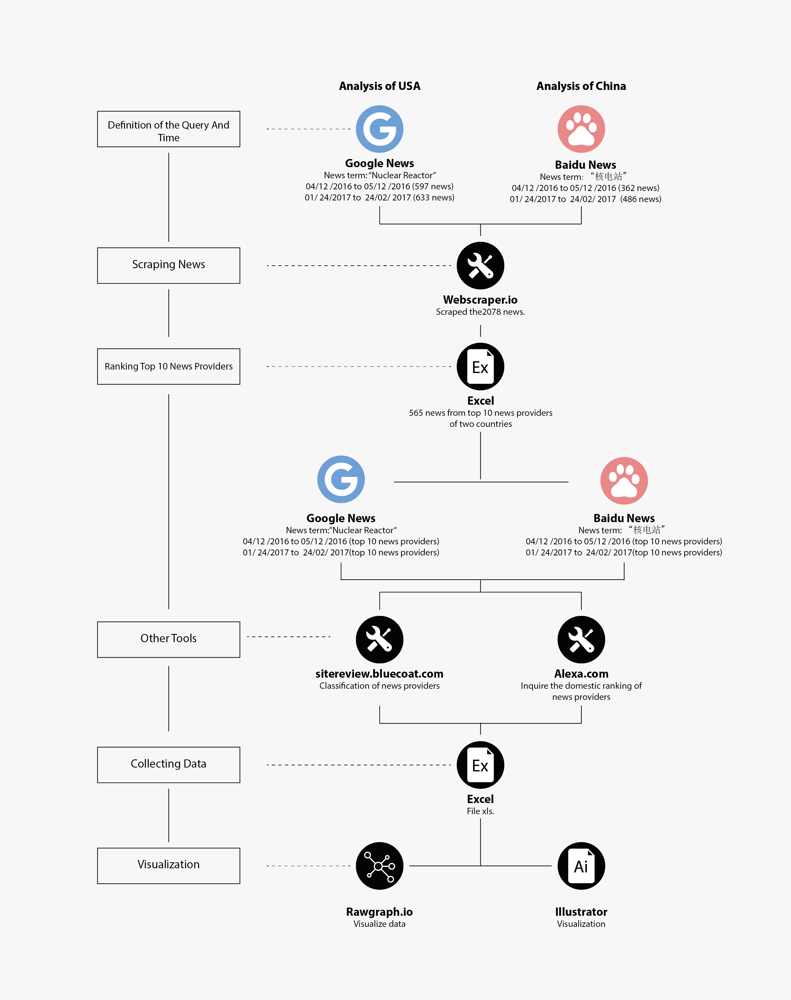

Description
News media shows its attitude or forms an opinion on the current situation and state of affairs through the news report. News media can spread and amplify public opinion, influence and guide public opinion. Because media report refracts the image and current condition of the nuclear reactor in the two countries, whether the media consciously control and guide the attitude of public opinion towards nuclear. So we decided to focus on news media. The purpose of the analysis is to know who reports the news about the nuclear reactor, and the type of news providers and popularity degree of their websites.
Starting from top 10 news providers per country, we can find the classification of news providers, the number of published articles of reporting nuclear and also the Alexa ranking of the website from this visualization. The type of American media and the number of publishied articles distribute relatively evenly, Chinese media which report nuclear reactor mainly distributes on the governmental official website and search portal website, the type of website mainly are News/ Media and Business/Economy.
Protocol
The 2 periods examined were selected referring to the results of Google Trends and Baidu index as shown in question 2 of this website.We selected to simultaneously search for the common peak value of “nuclear reactor” and “核电站” in Google trend and Baidu index, and the selected period is 24 – 30 April, 2016 (Chernobyl disaster 30th anniversary) and 5 – 11 February, 2017 (New fuel leaks were discovered at Fukushima) respectively. Each search query used keywords "Nuclear Reactor" for Google News USA and "核电站" for Baidu News. Each research period it was defined event a time range of before and after two weeks for the collection of the articles.
We used webscraper.io to collect all news from Baidu News and Google News USA during the two periods in total 2,078 pieces of Chinese and American news. Make a ranking according to the number of articles provided by the providers, we screened top 10 news providers per country.
Since we want to get a better understanding of news providers, we used Symantec tool to classify top 10 websites of both countries to observe what type of website more focus on nuclear reactor issue. Besides, to better compare the influence of top 10 websites on publicity in two countries, we used Alexa ranking to inquire the domestic ranking of those top ten news providers.
Data
Timestamp: 04/12/2016 - 05/12/2016，01/24/2017-02/24/2017
Data source: Google News , Baidu News
Symantec tool , Alexa ranking
Download data(Providers), Download data
We used webscraper.io to collect all news of Baidu news and Google news USA during these two periods and rank top 10 new medias according to number of articles. The collected data was organized into one dataset
1_USA 2016-April - 2_USA 2017-February - 3_CHINA 2016-April - 4_CHINA 2017-February
For each of the four periods of Chinese news and American news there is a dataset containing all the downloaded articles with Web Scraper (link, title, text, time, provider, category, comment, image )
The second form used Symantec tool to classify type of website and used Alexa ranking to inquire domestic ranking of news provider in per country.